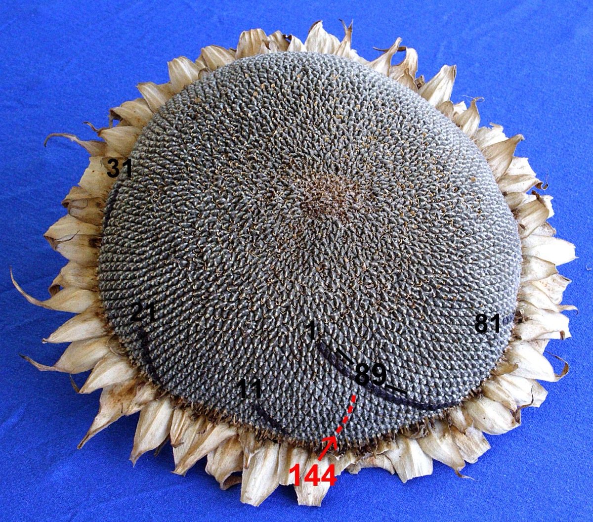

数と秩序
1, 1, 2, 3, 5, 8, 13——この数列が、花弁の枚数から松ぼっくりの螺旋まで繰り返し現れる理由は、神秘ではなく物理法則の帰結だった。
レオナルド・ピサーノ（フィボナッチ）が『算盤の書（Liber Abaci）』を出版。ウサギの繁殖問題の例として、この数列をヨーロッパに紹介した。
同年、第四回十字軍がヴェネツィアから出航。本来の目的地であるエルサレムではなく、キリスト教の都コンスタンティノープルに矛先を向けることになる。
ひまわりの種の並びをじっと見たことがあるだろうか。中心から外へ向かって、右巻きと左巻きの螺旋が交差している。無造作に散らばっているようで、どの種も隣と均等な距離を保っている。松ぼっくりを手に取って底面を覗くと、やはり螺旋が見える。パイナップルの表面にも、サボテンの棘の配列にも。
この螺旋の数を数えると、奇妙なことに気づく。右巻きが34本なら左巻きは55本、あるいは21本と34本。この数字——21, 34, 55——はどこかで見たことがある。前の2つを足すと次の数になる、あの数列だ。偶然とは言いがたい頻度で、植物はこのパターンを選んでいる。
この数列が自然にこれほど頻繁に現れる理由は、数の美しさとは無関係だ。物理的な制約のもとで最も効率よく詰め込もうとすると、数学的な必然としてこの配置にたどり着く。
ひとつの角度を変えるだけで、螺旋が美しく整ったり完全に崩れたりする様子を、自分の手で確かめる。植物がこの配置を「選ぶ」仕組みを、数列の先入観なしに体験してほしい。
フィボナッチ数列とは、直前の2つの数を足して次の数を作る規則で並ぶ数列のこと。最初の2つを1, 1とすると、1, 1, 2, 3, 5, 8, 13, 21, 34, 55, 89, 144……と続く。ルールはこれだけだ。掛け算も割り算もない。ただ「前の2つを足す」だけで、無限に大きくなっていく。
この数列の名前は、13世紀イタリアの数学者レオナルド・ピサーノLeonardo Pisano（c.1170–c.1250）
後世に「フィボナッチ（Fibonacci＝ボナッチの息子）」と呼ばれるようになったピサの商人・数学者。1202年に『算盤の書（Liber Abaci）』を出版し、アラビア数字をヨーロッパに普及させた。に由来する。彼は1202年の著書『算盤の書』のなかで、ある思考実験を提示した——壁に囲まれた場所にウサギの1つがいを放したら、1年後に何つがいになるか？毎月1つがいが新たに生まれ、生後2か月目から繁殖を始め、決して死なないと仮定する。1か月目は1つがい。2か月目に最初のペアが子を産んで2つがい。3か月目に最初のペアがまた産んで3つがい。4か月目には最初のペアと2か月目生まれのペアがそれぞれ産んで5つがい……。月ごとのつがいの数を並べると、1, 1, 2, 3, 5, 8, 13, 21——フィボナッチ数列そのものになる。現実のウサギはこんなふうに増えはしないが、「前の2つを足す」という規則の最初の具体例になった。
ただし数列自体はフィボナッチの発明ではない。紀元前200年頃、インドの詩人ピンガラがサンスクリット韻律サンスクリット韻律（Sanskrit prosody）
古代インドの詩の音律体系。短音節（1拍）と長音節（2拍）の組み合わせパターンを数え上げると、拍数ごとの組み合わせ数がフィボナッチ数列と一致する。の組み合わせを数えるなかで同じ構造を記述していたことがわかっている。フィボナッチの功績は発見そのものよりも、この構造をアラビア数字の記法とともにヨーロッパに届けたことにある。
興味深いのは、隣り合う2つのフィボナッチ数の比が、あるひとつの値に近づいていくことだ。1/1＝1、2/1＝2、3/2＝1.5、5/3＝1.666…、8/5＝1.6、13/8＝1.625……数が大きくなるほど、比は約1.618に収束する。この値は黄金比（φ）黄金比（golden ratio, φ）
(1+√5)/2 ≈ 1.6180339887… 古代ギリシャから知られる無理数。フィボナッチ数列の隣接項の比は無限に進むとφに収束する。と呼ばれる。
| F(n) / F(n-1) | 計算 | 比 |
|---|---|---|
| 1 / 1 | 1÷1 | 1.000 |
| 2 / 1 | 2÷1 | 2.000 |
| 3 / 2 | 3÷2 | 1.500 |
| 5 / 3 | 5÷3 | 1.667 |
| 8 / 5 | 8÷5 | 1.600 |
| 13 / 8 | 13÷8 | 1.625 |
| 21 / 13 | 21÷13 | 1.615 |
| 34 / 21 | 34÷21 | 1.619 |
| 89 / 55 | 89÷55 | 1.618… |
植物の葉や花弁の配置のことを、葉序（フィロタキシス）葉序（phyllotaxis）
ギリシャ語の phyllon（葉）+ taxis（配列）。1754年にスイスの博物学者シャルル・ボネが命名。茎の周りの葉・花弁・種子の配列パターンを指す。と呼ぶ。この分野の核心は、ひとつのシンプルな問い——「新しい葉は、茎のどこに生えるか？」——に集約される。
1868年、ドイツの植物学者ヴィルヘルム・ホフマイスターWilhelm Hofmeister（1824–1877）
ドイツの植物学者。大学での正規教育を受けずに植物形態学の基礎を築いた。1868年に葉序の仮説を提唱。が決定的な仮説を立てた。新しい芽（原基）は、既存の芽からもっとも遠い場所に形成される——つまり、「いちばん空いている場所に生える」。これだけだ。個々の芽は周囲の芽を「押しのける」ように振る舞い、もっとも混雑していない位置に落ち着く。
この規則を延々と繰り返すと、隣り合う芽の角度はある値に収束する。約137.5度。これは360度を黄金比で割った値で、黄金角黄金角（golden angle）
360° ÷ φ² ≈ 137.5077…° 円を黄金比で分割したときの小さい方の弧に対応する角度。フィボナッチ螺旋の基礎。と呼ばれる。なぜ137.5度なのか？ この角度が無理数無理数（irrational number）
分数（整数の比）で表すことができない実数。√2やπが代表例。黄金比は「もっとも有理数で近似しにくい無理数」であり、だからこそ繰り返しパターンが生じにくい。（正確には「もっとも有理数有理数（rational number）
2つの整数の比（分数）で表せる数。1/2、3/7、0.25など。有理数に対応する角度で芽を並べると、芽が直線上に重なる「隙間」が生じてしまう。で近似しにくい無理数」）であるため、どれだけ繰り返しても芽が一直線に重ならない。つまり、日光や空間をもっとも効率よく分け合える配置になる。
よくある誤解
✗ よくある誤解
「植物はフィボナッチ数列を"知っている"から螺旋を作る」
✓ 実際は
植物は数列を計算していない。幾何学的制約幾何学的制約（geometric constraint）
成長する茎の先端という限られた空間と、既存の芽との物理的な押し合い。この制約が特定の配置パターンを「選ばせる」。（空間の最適利用）に従った結果が、数学的にフィボナッチ数列と一致する。
✗ よくある誤解
「すべての植物がフィボナッチ数を持つ」
✓ 実際は
多くの植物で観察されるが、例外もある。4枚の花弁を持つフクシアフクシア（Fuchsia）
アカバナ科の観賞用植物。花弁が4枚で、フィボナッチ数（3, 5, 8…）ではなくルーカス数列に沿う例として知られる。など、ルーカス数列ルーカス数列（Lucas sequence）
1, 3, 4, 7, 11, 18, 29… フィボナッチと同じ「前の2つを足す」規則だが、最初の2つが1と3。開度角は約99.5°に収束する。（1, 3, 4, 7, 11…）に従う場合もあり、普遍的法則というよりは「非常に強い傾向」である。
✗ よくある誤解
「フィボナッチ数列は神聖な比率の証拠だ」
✓ 実際は
最適パッキング（効率のよい詰め込み）という物理的な理由で説明できる。神秘的な意図ではなく、自然選択と幾何学的制約の結果だ。
ここまでの説明を、自分の手で確かめよう。下のシミュレーターでは、中心から外に向かって種を順番に配置する。各種は前の種から一定の角度だけ回転した位置に置かれる。この角度を開度角開度角（divergence angle）
茎を上から見たとき、連続する2つの葉（または種・花弁）のなす角度。多くの植物で約137.5°（黄金角）。この角度が配置パターンを決定する。と呼ぶ。スライダーで開度角を変えると、配置パターンが劇的に変わる。
まず137.5°のまま観察してほしい。種はむらなく円全体に広がる。次にスライダーを少しずらして、たとえば137.0°や138.0°にしてみてほしい。たった0.5°の違いで、螺旋にすき間ができたり種が重なったりする。さらに120°や90°のような「きりのいい数」にすると、種が直線上に並んで大きな空白ができる。これが「有理数の罠」だ——360度に対する比が分数で表せる角度では、芽が必ず直線上に重なってしまう。
スライダーで角度を動かして、配置がどう変わるか観察してください。137.5°が黄金角です。
試してみただろうか。137.5度——小数点以下のたった一桁が、配置の美しさと効率を決めている。植物はこの角度を「計算」しているわけではない。新しい芽が既存の芽を化学的に押しのける仕組み（後述するオーキシンの極性輸送）に従った結果、自動的にこの角度に収束するのだ。

ひまわり（Helianthus annuus）の種頭。右巻きと左巻きの螺旋が交差し、その本数はフィボナッチ数の隣接ペアになる（原図: L. Shyamal, CC BY-SA 2.5）。
理解を確かめる
松ぼっくりの底面に右巻き8本、左巻き13本の螺旋が見えるとする。この螺旋の数がフィボナッチ数になる主な理由は？
「いちばん空いた場所に生える」というホフマイスターの仮説を、植物を使わずに物理実験で再現した研究者がいる。1992年、パリの物理学者ステファン・ドゥアディとイヴ・クーデは、磁性流体の滴を使った実験でフィボナッチ螺旋を人工的に生成した。
Stéphane Douady & Yves Couder
Physicists · École Normale Supérieure, Paris
磁性流体（フェロフルイド）の滴を皿の中央に定期的に落とし、磁場で互いに反発させた。滴が「いちばん空いた場所」に移動するこの系で、フィボナッチ螺旋が自発的に出現した。植物と無関係な物理系から同じパターンが生まれることを実証した画期的な実験。
実験はこうだ。平らな皿の中央に小さな丘を作り、垂直の磁場をかける。磁場は皿の縁に近いほど強い。この皿の中央に、磁性流体の滴を一定間隔で落とす。滴は磁化されて互いに反発し、磁場の勾配に従って外側に移動する。新しい滴は既存の滴に最も押されない方向——つまり「最も空いた場所」——に進む。
なぜ磁性流体の滴がフィボナッチ螺旋を作るか
滴を落とす
中央の丘に磁性流体を一定間隔で滴下
磁性流体の滴は磁場の中で互いに反発する。新しい滴は、皿の中央に落とされた瞬間から既存の滴に押しのけられ始める。これが植物の原基に対応する。
最も空いた方向に移動する
ホフマイスターの法則の物理版
新しい滴は、直近の2つの滴から最も離れた方向に移動する。滴下の間隔がゆっくりなら、新しい滴は前の滴の正反対に行く（180°）。しかし間隔が短くなると、直近の2つの滴が同時に反発し、第三の方向——黄金角の位置——に収束する。
フィボナッチ螺旋の出現
角度が137.5°に収束し、螺旋パターンが自発的に形成
滴が増えるにつれ、配置は黄金角を基準とした螺旋パターンに安定する。左巻きと右巻きの螺旋を数えると、その数はフィボナッチ数列の隣接ペア——5と8、8と13、13と21——になる。植物と同じ結果が、生物学的メカニズムなしに再現された。
2000年代以降、分子生物学的な裏付けも進んだ。植物ホルモンのオーキシンオーキシン（auxin）
植物の成長を促すホルモン。極性輸送により細胞間を方向性を持って移動し、濃度の高い場所に新しい原基が形成される。が極性輸送によって成長点に集まり、濃度が最も高い場所に新しい原基が形成されることがわかった。既存の原基はオーキシンを吸い上げるため、その周囲ではオーキシン濃度が低下し、新しい原基が形成されにくくなる。これがホフマイスターの「いちばん空いた場所に」を分子レベルで実現するメカニズムだ。
"The Fibonacci pattern seems to be a robust and stable mathematical phenomenon, a finding which goes some way to explaining its widespread occurrence throughout the plant kingdom."
「フィボナッチ・パターンは頑健で安定した数学的現象のようであり、この発見は植物界全体にわたる広範な出現をある程度説明してくれる。」
— G. J. Mitchison, "Phyllotaxis and the Fibonacci Series" (1977)
c. 200 BC
ピンガラの韻律学
インドの詩人ピンガラが、サンスクリット詩の短音節と長音節の組み合わせを数えるなかで、フィボナッチ数列と同じ構造を記述。
1202
『算盤の書（Liber Abaci）』
レオナルド・ピサーノ（フィボナッチ）がウサギの繁殖問題を通じてこの数列をヨーロッパに紹介。アラビア数字の普及も同書の功績。
1754
シャルル・ボネの「葉序」
スイスの博物学者が植物の葉の配列パターンを体系的に記述し、「phyllotaxis（葉序）」の語を生んだ。
1830s
シンパーとブラヴェ兄弟
ドイツの植物学者シンパーが遺伝螺旋と開度角の概念を導入。フランスのブラヴェ兄弟が葉序と黄金角の関係を数学的に分析。
1868
ホフマイスターの仮説
「新しい原基は既存の原基からもっとも遠い場所に形成される」——この単純な仮説が、フィボナッチ螺旋の出現を説明する基盤となった。
1992
ドゥアディ=クーデの物理実験
磁性流体の滴で植物の成長を模擬し、フィボナッチ螺旋が自己組織化によって出現することを物理的に実証。
2006
オーキシン極性輸送モデル
Jönsson, Heisler, Smithらが分子レベルのメカニズムを提唱。植物ホルモン・オーキシンの輸送がフィボナッチ配置を生む仕組みをモデル化。
ここまで読んで、こう思うかもしれない——「結局、フィボナッチ数列に神秘はなかったのか」と。確かに、植物がフィボナッチ数列を「知っている」わけではない。葉序のパターンは、物理的な制約と化学的なメカニズムの組み合わせから自然に生まれる。数列が自然を設計したのではなく、自然の制約が数列を生んだ。順序が逆なのだ。
しかし、面白いのはまさにこの「逆転」にある。無関係な場所で同じパターンが繰り返し立ち上がることこそが、驚きの本質だ。
考えてみてほしい。800年前、フィボナッチは架空のウサギの繁殖を数えていた。「前の月の2つのつがい数の合計が次の月の数になる」。一方、植物の成長点では化学物質が拡散し、芽がもっとも空いた場所を奪い合う。インドの詩人は音節の並べ方を組み合わせていた。パリの物理学者は皿の上に磁性流体を垂らしていた。これらの間に連絡はない。ウサギはひまわりの種のことを知らないし、オーキシンはサンスクリット韻律と何の関係もない。
それなのに、同じ数列が浮かび上がる。この一致は「神の設計」のようにも見えるが、実態はもっと地味で、もっと深い。「前の2つから次の1つが決まる」という再帰構造が、まったく異なる物理系のなかで独立に発生しうるということだ。ウサギの問題でも、葉序の問題でも、韻律の問題でも、構造が同じだから答えが同じになる。数学は世界を設計しているわけではない——しかし、構造が同じ場所には必ず同じ数学が現れる。
カナダの数学者H・S・M・コクセターは、フィボナッチ葉序を「自然法則というよりは、魅惑的に広く見られる傾向」と表現した。法則と言い切れないのは、例外があるからだ。フクシアの4枚花弁、ルーカス数列に従うセダムの6列配列。しかし例外の存在こそが、このパターンの面白さを際立たせる。もし万物がフィボナッチなら、それはただの法則であって驚くに値しない。「ほとんどそうだが、たまに違う」——その微妙な多数決の理由を問うことが、この話をまだ終わらせない理由だ。
シミュレーターで角度を0.5度ずらしただけで螺旋が崩れたのを思い出してほしい。137.5度の「正確さ」は、有理数と無理数のあいだの深い溝に根ざしている。植物はその溝の正確な位置を、化学反応で——試行錯誤なしに——毎回見つけている。数学に神秘はなかったかもしれない。しかし、化学反応がこれほど正確に無理数を「踏む」という事実に、私はまだ少し驚いている。
作品への登場
ダン・ブラウンの小説『ダ・ヴィンチ・コード』（2003）でフィボナッチ数列が暗号の鍵として登場し、一般への認知度が大きく上がった。映画『π（パイ）』（1998, ダーレン・アロノフスキー監督）では、自然界のパターンに取り憑かれた数学者が描かれる。ツール（Tool）のアルバム『Lateralus』（2001）のタイトル曲は、歌詞の音節数がフィボナッチ数列に沿っている。
アリスタロエ・アリスタータ（Aristaloe aristata）のロゼット。葉の配列が黄金角（約137.5°）に従い、5・8・13列のフィボナッチ螺旋が観察できる（原図: Abu Shawka, CC BY-SA 4.0）。
Phyllotaxis as a Physical Self-Organized Growth Process
磁性流体の滴でフィボナッチ螺旋を物理的に再現した画期的な実験論文。
Biophysical Optimality of the Golden Angle in Phyllotaxis
黄金角が茎のねじれエネルギーを最小化する最適解であることを示した適応仮説。
The Golden Ratio: The Story of Phi, The World's Most Astonishing Number
黄金比とフィボナッチ数列の歴史・文化・科学を総合的に解説した一般書。
Fibonacci's Liber Abaci: A Translation into Modern English
1202年の原著の現代英語訳。ウサギの問題は283ページに登場する。
An Auxin-Driven Polarized Transport Model for Phyllotaxis
オーキシンの極性輸送がフィボナッチ配置を生む分子メカニズムのモデル。